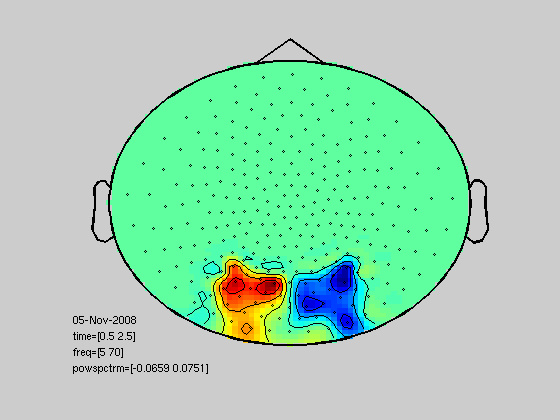

Using the classification module together with FieldTrip data
This example demonstrates how to use neuroimaging data obtained from FieldTrip together with the classification module. Here, we have more control over what will happen compared with statistics_crossvalidate. In the example, we make use of covert attention data of one subject that has already been frequency analyzed.
The data consists of 7 different frequencies at 274 channels at time points [-0.5 0 0.5 1 1.5 2 2.5]. We can expect evoked response after the cue and alpha modulation after about 1 second.
Copyright (C) 2008 Marcel van Gerven
Contents
Simple classification examples
function classification_demo()
get data and design (class labels)
[data,design] = read_imaging_data();
selected 38 channels selected 5 time bins selected 7 frequency bins Warning: PACK can only be used from the MATLAB command line.
specify classification procedure
myproc = clfproc({ ...
standardizer() ...
lr() ...
});
validation method; randomize trial order and give verbose output
cv = crossvalidator('procedure',myproc,'cvfolds',0.8,'randomize',true,'verbose',true);
compute crossvalidation results
cv = cv.validate(data,design);
collapsing data
shuffling data
validating using 20% of the data for testing
Iteration FunEvals Step Length Function Val Opt Cond
1 2 4.45469e-05 1.29121e+02 1.97613e+04
2 3 5.06014e-01 8.80241e+01 1.40043e+04
3 4 7.14013e-01 5.82710e+01 1.50823e+04
4 5 6.62987e-01 4.33959e+01 9.20018e+03
5 6 1.00000e+00 2.55110e+01 3.27892e+03
6 7 1.00000e+00 1.54855e+01 2.13604e+03
7 8 1.00000e+00 6.44725e+00 9.28427e+02
8 9 1.00000e+00 2.89214e+00 5.54140e+02
9 10 1.00000e+00 1.31877e+00 3.02743e+02
10 11 1.00000e+00 6.60184e-01 1.14510e+02
11 12 1.00000e+00 3.37352e-01 6.07519e+01
12 13 1.00000e+00 1.63936e-01 3.23591e+01
13 14 1.00000e+00 7.48559e-02 1.45611e+01
14 15 1.00000e+00 3.84171e-02 7.29850e+00
15 16 1.00000e+00 1.78983e-02 3.64549e+00
16 17 1.00000e+00 8.54369e-03 1.71453e+00
17 18 1.00000e+00 4.14930e-03 9.73336e-01
18 19 1.00000e+00 1.86230e-03 3.68013e-01
19 20 1.00000e+00 9.89266e-04 1.90982e-01
20 21 1.00000e+00 4.71974e-04 1.00633e-01
21 22 1.00000e+00 2.23314e-04 4.48458e-02
22 23 1.00000e+00 1.12793e-04 2.19662e-02
23 24 1.00000e+00 5.51808e-05 1.12083e-02
24 25 1.00000e+00 2.61895e-05 5.26937e-03
25 26 1.00000e+00 1.25908e-05 2.54077e-03
26 27 1.00000e+00 6.26867e-06 1.20276e-03
Function Value changing by less than TolFun
get average classification accuracy
cv.evaluate('metric','accuracy')
ans = 0.840000000000000
significance compared with a baseline classifier
cv.significance
performing one-sided biniomial test (p=0.05) null hypothesis rejected (0.00137428<0.05); significant difference from majority classification (class 1 with prior of 0.5) ans = 0.001374275875832
for this classifier we can project parameters back onto the scalp
% get the structure load ~/code/classification/toolboxes/bayesbrain/examples/freqli; % change dimensions freqLI.time = 1; freqLI.freq = [5 8 12 20 30 50 70]; freqLI.time = 0.5:0.5:2.5; freqLI.powspctrm = zeros(274,7,5); freqLI.dimord = 'chan_freq_time'; % set powerspectrum to parameters channels = ismember(freqLI.label,channelselection({'MLO' 'MRO'},freqLI.label)); freqLI.powspctrm(channels,:,:) = reshape(full(cv.procedure.clfmethods{2}.model(1,1:(end-1))),size(freqLI.powspctrm(channels,:,:))); % predictive map tcfg.layout = 'CTF274.lay'; topoplotTFR(tcfg,freqLI);
reading layout from file CTF274.lay